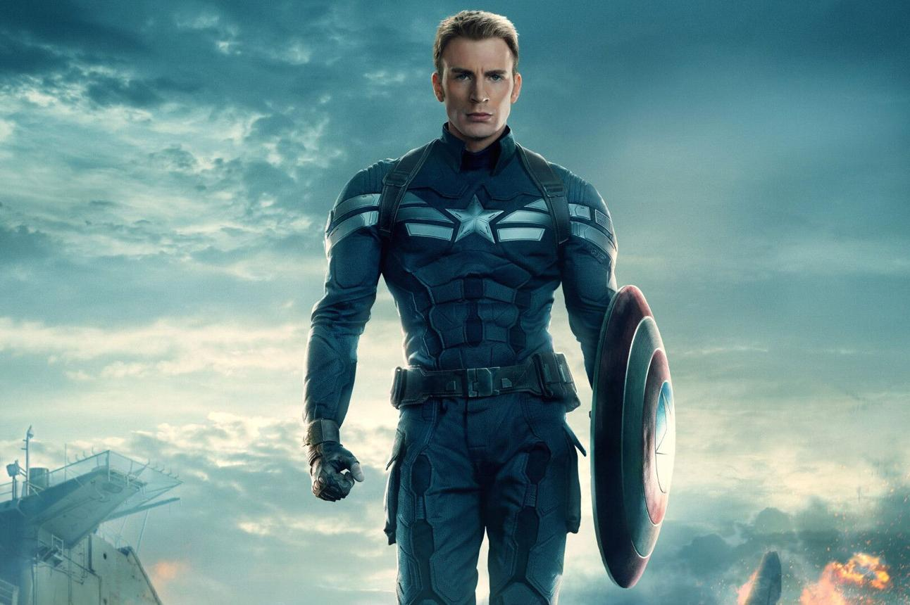
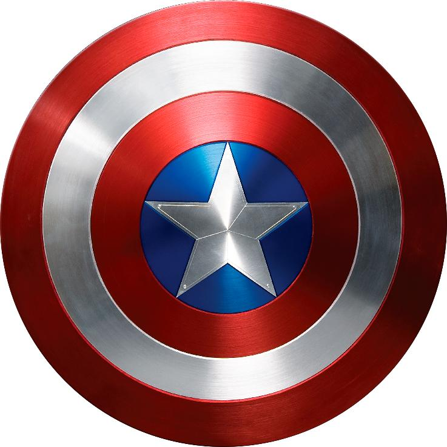

Quem é o Capitão América?
O Capitão América é um dos heróis mais famosos da Marvel Comics. Seu nome verdadeiro é Steve Rogers, um jovem que se tornou símbolo de coragem, justiça e liderança.
Origem
Durante a Segunda Guerra Mundial, Steve Rogers desejava servir seu país, mas era fisicamente fraco. Ele foi escolhido para participar do projeto Super Soldado e recebeu o Soro do Super Soldado, tornando-se o Capitão América.
Poderes e Habilidades
- Força acima da média humana
- Velocidade e agilidade excepcionais
- Reflexos extremamente rápidos
- Grande resistência física
- Recuperação acelerada
- Especialista em combate corpo a corpo
- Liderança estratégica
O Escudo
Seu famoso escudo é feito principalmente de vibranium, um metal extremamente resistente capaz de absorver impactos.

História
Após lutar na Segunda Guerra Mundial, Steve Rogers caiu em águas geladas do Ártico e permaneceu congelado por décadas. Mais tarde foi encontrado pelos Vingadores e despertou em uma época completamente diferente.
Curiosidades
- Foi criado em 1941.
- Seu maior inimigo é o Caveira Vermelha.
- Já foi dado como morto várias vezes nos quadrinhos.
- Sam Wilson e Bucky Barnes já assumiram o manto.
- Steve Rogers gostava de desenhar antes de virar herói.
Frase Marcante
"Eu posso fazer isso o dia todo."